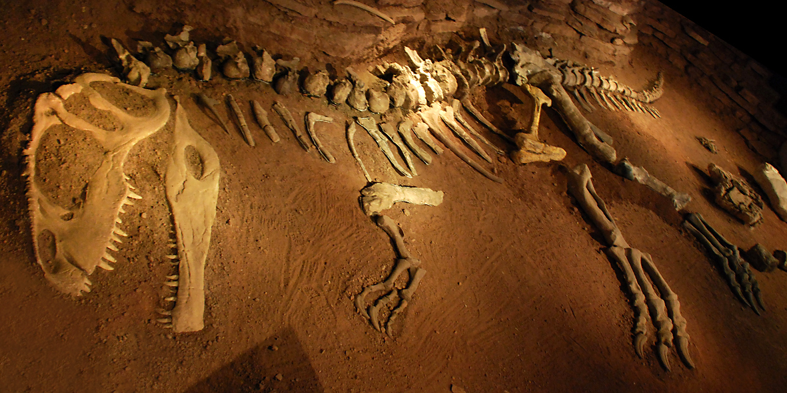

Paleobotánica y el origen del término paleontología
En 1828 el hijo de Alexandre Brongniart, el botánico Adolphe Brongniart, publicó la introducción a un trabajo más extenso sobre la historia de las plantas fósiles.

Adolphe Brongniart concluyó que la historia de las plantas más o menos se podía dividir en cuatro partes. El primer período se caracterizaba por la presencia de criptógamas. El segundo período se caracterizaba por la aparición de las coníferas. El tercer período incluía el surgimiento de las cícadas, y el cuarto el desarrollo de las plantas con floración (tales como las dicotiledóneas). Las transiciones entre cada uno de estos períodos estaban marcadas por discontinuidades bruscas en el registro fósil, con cambios más graduales dentro de los períodos. El trabajo de Brongniart es la base de la paleobotánica y reforzó la teoría de que la vida en la tierra tenía una historia larga y compleja, y los diferentes grupos de plantas y animales aparecían en orden sucesivo. 26 También apoyó la idea de que el clima terrestre había cambiado con el tiempo, dado que Brongniart concluyó que el registro fósil de plantas demostraba que el clima del norte de Europa debía haber sido tropical durante el Carbonífero.
La atención cada vez mayor que se prestaba a las plantas fósiles durante las primeras décadas del siglo xix desencadenaría un cambio significativo en la terminología para el estudio de la vida pasada. El editor de la influyente revista científica francesa Journal de Physique, un estudiante de de Cuvier llamado Henri Marie Ducrotay de Blainville, acuñó el término "paleozoología" en 1817 para referirse a la obra que Cuvier y otros estaban haciendo para reconstruir animales extintos a partir de huesos fósiles. Sin embargo, Blainville comenzó a buscar un término que pudiera referirse al estudio tanto de fósiles de animales como de restos vegetales. Después de probar algunas alternativas sin éxito, se le ocurrió "palaeontología" en 1822. El término de Blainville para el estudio de los organismos fosilizados adquirió popularidad rápidamente y se derivó en el término actual "paleontología".